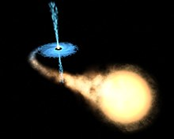

En las cercanías de un agujero negro se suele formar un disco de acrecimiento, compuesto de materia con momento angular, carga eléctrica y masa, la que es afectada por la enorme atracción gravitatoria del mismo, ocasionando que inexorablemente atraviese el horizonte de sucesos y, por lo tanto, incremente el tamaño del agujero.
En cuanto a la luz que atraviesa la zona del disco, también es afectada, tal como está previsto por la teoría de la Relatividad. El efecto es visible desde la Tierra por la desviación momentánea que produce en posiciones estelares conocidas, cuando los haces de luz procedentes de las mismas transitan dicha zona.
Hasta hoy es imposible describir lo que sucede en el interior de un agujero negro; solo se puede imaginar, suponer y observar sus efectos sobre la materia y la energía en las zonas externas y cercanas al horizonte de sucesos y la ergosfera.
Uno de los efectos más controvertidos que implica la existencia de un agujero negro es su aparente capacidad para disminuir la entropía del Universo, lo que violaría los fundamentos de la termodinámica, ya que toda materia y energía electromagnética que atraviese dicho horizonte de sucesos, tienen asociados un nivel de entropía. Stephen Hawking propone en uno de sus libros que la única forma de que no aumente la entropía sería que la información de todo lo que atraviese el horizonte de sucesos siga existiendo de alguna forma.
Otra de las implicaciones de un agujero negro supermasivo sería la probabilidad que fuese capaz de generar su colapso completo, convirtiéndose en una singularidad desnuda de materia.

Representación artística de un agujero negro con una estrella compañera que se mueve en órbita alrededor, excediendo su límite de Roche.
Entropía en los agujeros negros
Según Stephen Hawking, en los agujeros negros se fusionan el segundo principio de la termodinámica, lo que dio pie a especulaciones sobre viajes en el espacio-tiempo y agujeros de gusano. El tema está siendo motivo de revisión; Hawking se retractó de su teoría inicial y admitió que la entropía de la materia se conserva en el interior de un agujero negro. Según Hawking, a pesar de la imposibilidad física de escape de un agujero negro, estos pueden terminar evaporándose por la llamada radiación de Hawking, una fuente de rayos X que escapa del horizonte de sucesos.
La hipótesis de que los agujeros negros contienen una entropía y que, además, esta es finita, requiere para ser consecuente que tales agujeros emitan radiaciones térmicas, lo que al principio parece increíble. La explicación es que la radiación emitida escapa del agujero negro, de una región de la que el observador exterior no conoce más que su masa, su momento angular y su carga eléctrica. Eso significa que son igualmente probables todas las combinaciones o configuraciones de radiaciones de partículas que tengan energía, momento angular y carga eléctrica iguales. Son muchas las posibilidades de entes, si se quiere hasta de los más exóticos, que pueden ser emitidos por un agujero negro, pero ello corresponde a un número reducido de configuraciones. El número mayor de configuraciones corresponde con mucho a una emisión con un espectro que es casi térmico.
Físicos como Jacob D. Bekenstein han relacionado los agujeros negros y su entropía con la teoría de la información. Los trabajos de Bekenstein sobre teoría de la información y agujeros negros sugirieron que la segunda ley seguiría siendo válida si se introducía una entropía generalizada (Sgen) que sumara a la entropía convencional (Sconv), la entropía atribuible a los agujeros negros que depende del área total (A) de agujeros negros en el universo. Concretamente esta entropía generalizada debe definirse como:
Donde, k es la constante de Boltzmann, c es la velocidad de la luz, G es la constante de gravitación universal y {\displaystyle \hbar }\hbar es la constante de Planck racionalizada, y A el área del horizonte de sucesos.